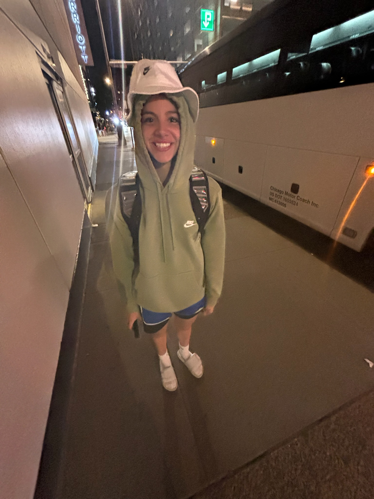

Maria Mejia Roa
My name is Maria Mejia Roa, and I am a Pre-Business student at the University of California, Riverside. I have an expected graduation date of June 2029 and currently have a 3.63 GPA. I am interested in business, hospitality, and real estate, and I hope to continue developing my professional skills while completing my education.
Throughout high school, I was involved in leadership and athletics. I served as captain of my varsity girls basketball team at Fairmont Prep, where I helped lead the team to four league championships and three Open Division appearances. I also currently participate in the UC Riverside Women's Basketball team. These experiences have helped me develop discipline, teamwork, communication, and time management skills.
I also served as class representative and treasurer, where I managed budgets, tracked expenses, and helped organize fundraising events. Outside of school, I have participated in animal rescue volunteering, church and school volunteering, and fundraising activities with local businesses.
I am fluent in English and Spanish and currently learning French. I enjoy working with others, helping my community, and taking on leadership opportunities. My goal is to continue growing academically and professionally while exploring future opportunities in business.
Experience
Varsity Girls Basketball Team Captain
• Led the team to 4 league championships and 3 Open Division appearances over four seasons.
• Built a strong team culture by motivating teammates and promoting accountability and discipline.
• Mediated conflicts and supported teammates' personal and athletic development.
• Organized team fundraising initiatives and managed communication with school staff and sponsors.
• Represented the team in meetings with coaches and administration.
• Currently part of the UC Riverside Women's Basketball team.
Class Representative (Treasurer)
• Managed class budgets, tracked expenses, and ensured financial transparency.
• Coordinated fundraising events with local businesses, raising thousands of dollars.
• Collaborated with student leaders to plan dances, ceremonies, and service projects.
• Strengthened partnerships with community vendors to support school activities.
Event Fundraiser Coordinator
• Planned and executed fundraising campaigns in partnership with major businesses.
• Promoted events through social media and community outreach.
• Built relationships with corporate representatives to ensure successful event execution.
• Helped raise funds for school programs and student initiatives.
Animal Rescue Volunteer
• Assisted local animal shelters with daily care, including feeding, cleaning, and socializing animals.
• Educated community members about animal adoption and rescue.
• Supported fundraising and awareness campaigns for animal welfare organizations.
• Helped animals adjust to human interaction through consistent care and attention.
Church & School Volunteer
• Organized community events, fundraisers, and service projects.
• Managed event logistics, including registration, payments, and vendor coordination.
• Helped raise funds and increase community participation through outreach efforts.
• Demonstrated commitment to service, leadership, and community engagement.
Education
University of California, Riverside
GPA: 3.63
Portfolio




Skills
• Bilingual: Fluent in English and Spanish
• Beginner French
• Leadership and team management
• Event planning and coordination
• Social media marketing and promotion
• Communication and public speaking
• Financial tracking and budgeting
• Animal care and volunteer coordination
Activities & Involvement
• Varsity Basketball (Team Captain, 3 years)
• UC Riverside Women's Basketball
• Animal Rescue and Volunteer Leadership
• Community Service and Volunteer Leadership
• Business and Pre-Professional Development Activities (UCR clubs/events)
• Interest in Hospitality and Real Estate Industries